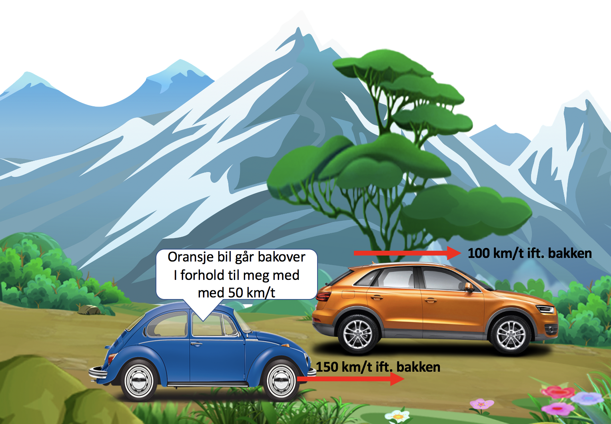

Forrige side🙂 🙁Klassisk relativitetPADLET

Det er helt riktig! Brukte du intuisjon eller fant du en formel/sammenheng mellom de to hastighetene? Var det samme sammenheng som i forrige spørsmål?
Neste side